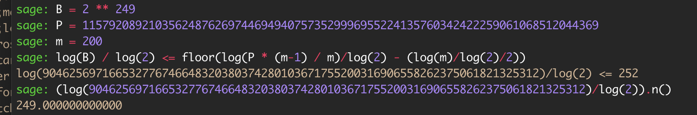
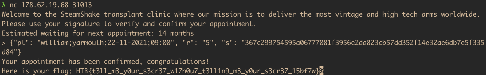

Waiting List [Hard; fb]
Hack the Box CTF 2021 [Qualifiers]
Your mechanical arm needs to be replaced. Unfortunately, Steamshake Inc which is the top mechanical arm transplants has a long waiting list. You have found a SQL injection vulnerability and recovered two tables from their database. Could you take advantage of the information in there to speed things up? Don’t forget, you have a date on Monday!
Proof of concept
First, let us translate the given code into something more mathematical in order to try to model it. At the crux of the challenge lies the provided signing function:
P = 115792089210356248762697446949407573529996955224135760342422259061068512044369
g = 5
# secret
key = ...
sign(M):
# since 256 is the number of bits in P
h = MSB(SHA1(M), 256)
# the nonce used in ECDSA
k = RAND(1, P-1)
# the calculation of r differs from standard ECDSA!
# should raise some suspicions, as (*, Zmod(P)) is
# usually a much weaker trapdoor than addition on
# an EC, esp. since P-1 is relatively smooth
r = g^k (mod P)
s = k^(-1) * (h + key * r) (mod P)
lsb = LSB(k, 7)
return h, r, s, lsb
So where and how is this actually used? Well, it seems to have been used on $200$ different appointments (provided to us in appointments.txt), the signatures of which (including h for convenience, and, more importantly, lsb) are provided to us in signatures.txt.
Providing the LSB of the nonce is something I’ve never encountered in a textbook implementation of ECDSA (no wonder, since it serves 0 practical use), so this should immediately crank one’s eyebrow height by a bit.
Experience dictates that I should try to write the modular equation on the 4th line of the signing function (s = k^(-1) * (h + key * r) (mod P)) using the given LSB, as it might decrease the maximum size of some of the hidden parameters. This, in turn, might lead to the famous ECDSA lattice attack on biased (small-sized) nonces being applicable (https://eprint.iacr.org/2019/023.pdf). The hidden number problem can very easily be exploited, so let’s get to manipulating!
$$\begin{align}
s\equiv\,&k^{-1} \cdot (h + key \cdot r) \pmod P
\\&\iff s\cdot k \equiv h + key\cdot r \pmod P \\
&\iff s\cdot (u\cdot 2^7+lsb) \equiv h + key\cdot r \pmod P \\
&\iff s\cdot u\cdot128 \equiv h + key\cdot r - s\cdot lsb \pmod P \\
&\iff u \equiv (128\cdot s)^{-1}(h-s\cdot lsb) + key\cdot r\cdot (128\cdot s)^{-1} \pmod P.
\end{align}$$
Where $u$ represents the unknown $256 - 7 = 249$ most significant bits of the nonce $k = u\cdot 2^7 + lsb$. Let’s remind ourselves of the variables that we do not know in the equation above: $u$, and $key$. Therefore, let $a \equiv -(128\cdot s)^{-1}(h-s\cdot lsb) \pmod P$ be a known constant, and let $t \equiv r\cdot (128\cdot s)^{-1} \pmod P$ be another known constant. Then, the equation above becomes
$$\begin{align*}
u \equiv\, &(128\cdot s)^{-1}(h-s\cdot lsb) + key\cdot r\cdot (128\cdot s)^{-1} \pmod P \\
&\iff u \equiv -a + key\cdot t \pmod P
.\end{align*}$$
Or, by moving everything to the LHS, $$u - t\cdot key + a \equiv 0 \pmod P.$$
Again, we know that $u$ is $249$ bits long ($\approx B = 2^{249}$), $P$ is $256$ bits long, and that $a$ and $t$ are known. This means that the nonce $u$ is indeed biased by $7$ bits. We also have $200$ different plaintext/signature pairs, and hence $200$ equations of this form where the $key$ is constant throughout but the LSBs of the nonces $u$ can (and likely does) differ. Now, let us check with the requirements mentioned at the end of $4.1$ in https://eprint.iacr.org/2019/023.pdf to see if we can actually apply this attack. We do this with a little SageMath:

Aaaaand yep! We’ve struck gold! $249 \leq 252$, and so we have just enough messages for the bias to make the attack feasible.
The attack
Since the requirement mentioned above is met, all that’s left to do is get to implementing the textbook LLL solution to the hidden number problem. For any one of the $200$ appointments $m_i$, assume the corresponding nonce $u_i$ and known parameters $$t_i \equiv r\cdot (128\cdot s)^{-1} \pmod P$$ and $$a_i \equiv -(128\cdot s)^{-1}(h-s\cdot lsb) \pmod P.$$ In other words, consider the relation that we deduced above: $$u_i - t_i\cdot key + a_i \equiv 0 \pmod P.$$ As $\forall i$ the nonce $u_i$ shares the rough bit size of $B = 2^{249}$, we can go ahead and use the exact same lattice as the one in the paper:
$$M = \begin{bmatrix}
P \\
&P\\
&&\ddots\\
&&&P& & \\
t_1 & t_2 & … & t_m & B/P \\
a_1 & a_2 & … & a_m & & B
\end{bmatrix}$$
We expect the presence of a small vector of the form $(u_1, u_2. u_3, …, u_m, B\cdot key/p, B)$ inside of the LLL-reduced lattice. We push the LLL button on SageMath, and look for the rows that end in $B$. We look at the second-to-last entry, multiply by $P$, divide by $B$, and out should come the private key, at which point the scheme will be broken! 1
At that point, we can simply take the string 'william;yarmouth;22-11-2021;09:00' that we want to forge the signature of, get the corresponding h = MSB(SHA1(M), 256), and artificially set k = 1. With this, we can calculate the required signature $r = g^k = g = 5$, and $s \equiv k^{-1}(h + key \cdot r) \equiv h + key\cdot r \pmod P$. For us, this is
{"pt": "william;yarmouth;22-11-2021;09:00",
"r": "5",
"s": "367c299754595a06777081f3956e2da823cb57dd352f14e32ae6db7e5f335d84"}
N.B. In practice, we might get multiple rows ending in $B$ in the final matrix. Hence, we construct a set of all the candidate private keys/second-to-last row entries. This isn’t a major concern however, since we can expect this set to be really small (after all, the matrix has at most $200$ rows), so we can try the signatures that they would generate one at a time and see if they validate. For my solve script and the given problem data, the possible signatures for william;yarmouth;22-11-2021;09:00 (one per candidate private key) were
{"pt": "william;yarmouth;22-11-2021;09:00", "r": "5", "s": "83edc3e7b414a270d03f027cd54d42fcc62ce44cc4cb3eff14395904b908ece8"}
{"pt": "william;yarmouth;22-11-2021;09:00", "r": "5", "s": "7bae5612ab4c6ad04080dc1f5102129368122c20e41b0d7df8943b1c61aa13ff"}
{"pt": "william;yarmouth;22-11-2021;09:00", "r": "5", "s": "367c299754595a06777081f3956e2da823cb57dd352f14e32ae6db7e5f335d84"}
{"pt": "william;yarmouth;22-11-2021;09:00", "r": "5", "s": "470d1190cdbedea4fed090cdc9107f6278b22ca2fedbc3a5189ebd8e6743c7a7"}
Since they was only $4$, I tried each of them by hand, one at a time. The third one verified successfully.

Et voilà! First blood!
-
N.B. In practice, what we get is the negative of the key, since our $(a_i)$ are negative by construction. We will need to negate this value to get the true private key. ↩︎